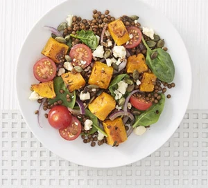

Squash and Lentil Salad

Ingredients
- 1kg Butternut Squash
- 1 ½ tbsp olive oil
- 1 garlic clove , crushed
- 2 tsp thyme leaves
- 1 tbsp balsamic vinegar
- 1 tsp wholegrain mustard
- 2 x cans puy lentils in water
- 1/2 Red onion sliced
- 100g bag spinach
- 150g Cherry tomatoes
- 40g Cheshire cheese
- 1-2 tbsp toasted pumpkin seeds
Steps
- Heat the oven to 200C/180C fan/gas 4. Toss the butternut squash with 1 tbsp olive oil, garlic clove, thyme leaves and seasoning. Roast for 25-30 mins or until tender.
- Mix together the balsamic vinegar, ½ tbsp olive oil, the wholegrain mustard and 1-2 tbsp water. Drain the puy lentils in water and toss with the dressing, red onion, spinach and cherry tomatoes.
- Divide the lentils between four plates. Top with the squash, then crumble over Cheshire cheese and pumpkin seeds.
Link back home